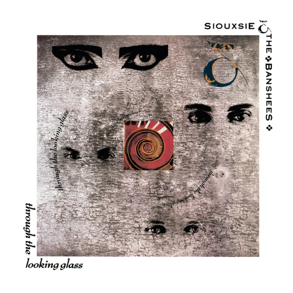

Pick of the Day
Midori Takada, Through the Looking Glass
1983
Not ambient as wallpaper. Ambient as architecture. Takada turns marimba, gongs and silence into a room that keeps changing shape. Patient, ceremonial, almost weightless.